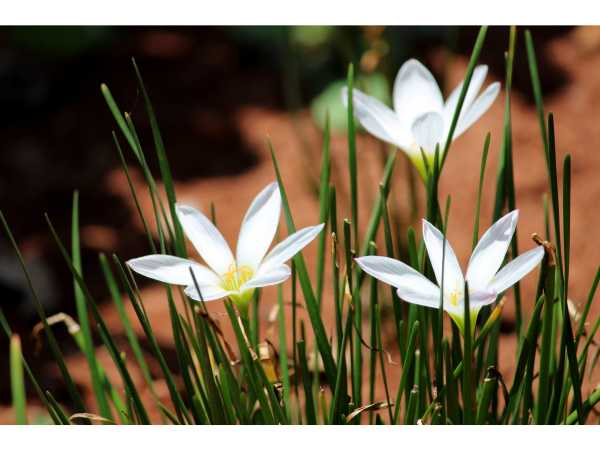

Zephyranthes candida
Common Names: Rain Lily, White Rain Lily, Zephyr Lily, Autumn Zephyr Lily
Local Name: Mazhai Arumbu (Tamil), Barsati Phool (Hindi)
Family: Amaryllidaceae
Origin: South America (Argentina, Uruguay)
Plant Type: Bulbous perennial herb
Average Lifespan: Many years; bulbs multiply and naturalize
| Growth Habit | Clump-forming bulbous herb; spreads by bulb offsets |
| Plant Size | 15–30 cm tall |
| Leaves | Narrow, grass-like, dark green, 20–30 cm long; rush-like appearance |
| Flowers | White, crocus-like, 3–5 cm diameter; solitary on hollow stems; appear after rain |
| Flower Characteristics | Pure white with yellow stamens; slightly fragrant; blooms prolifically after rainfall; each flower lasts 2–3 days |
| Root System | Small, tunicate bulbs; multiplies by producing offsets |
| Climate | Tropical to subtropical; tolerates a wide range of conditions |
| Temperature Range | 10–35°C; tolerates mild frost |
| Rainfall Requirement | Flowers triggered by rainfall; tolerates dry periods between blooms |
| Soil Type | Well-drained, moderately fertile soil; tolerates poor soils |
| Soil pH Preference | 6.0–7.5 |
| Sun Requirement | Full sun to partial shade |
| Spacing | 10–15 cm between bulbs; naturalizes to form dense clumps |
| Irrigation Method | Minimal; allow to dry between waterings; excess water reduces flowering |
| Water Requirement | Low; drought-tolerant; flowers best after dry period followed by rain |
| Can it Grow in Pots? | Yes, excellent in pots, borders, and rock gardens |
| Fertilizer Schedule | Light feeding in spring; avoid excess nitrogen which promotes leaves over flowers |
| Recommended Organic Fertilizers | Bone meal, compost; low-nitrogen fertilizer |
| Common Pests | Bulb mites, narcissus fly (rare); generally pest-resistant |
| Common Diseases | Bulb rot in waterlogged soil; leaf spot in humid conditions |
| Disease Prevention & Remedies | Excellent drainage; avoid overwatering; divide clumps every 3–4 years |
| Pruning Time | Remove spent flowers; allow leaves to die back naturally |
| How to Prune | Deadhead spent blooms; do not cut leaves until fully yellowed |
| Flowering Months | Monsoon season (June–October in India); blooms 1–2 days after rainfall |
| Pollination Type | Insect pollinated; bees and butterflies |
| Pollination Notes | Flowers attract bees; mass blooming after rain creates spectacular display |
| Propagation by Cuttings | Division of bulb clumps; separate offsets and replant; most common method |
| Propagation by Seeds | Seeds germinate in 2–3 weeks; plants flower in 2nd year |
| Water Usage | Very low; ideal for water-wise gardens |
| Biodiversity Benefits | Attracts bees and butterflies; excellent ground cover for erosion control |
| Companion Plants | Marigolds, portulaca, other bulbous plants; excellent border plant |
| Commercial Production Regions | Widely cultivated in tropical nurseries; popular in Indian gardens |
| Market Uses | Ornamental garden plant, border plant, container plant, cut flower |
| Market Value (Approx.) | ₹30–100 per clump of bulbs in Indian nurseries |
| Symbolism | Symbol of renewal and hope; the sudden blooming after rain represents life emerging after hardship |
| Traditional Uses | Used in traditional medicine in South America for diabetes management; popular garden ornamental across tropical Asia |
Add your field observations here.